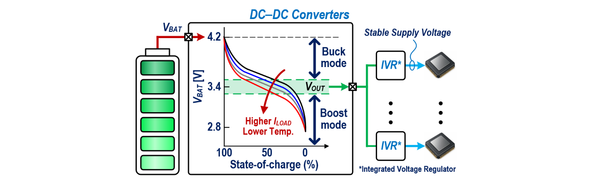
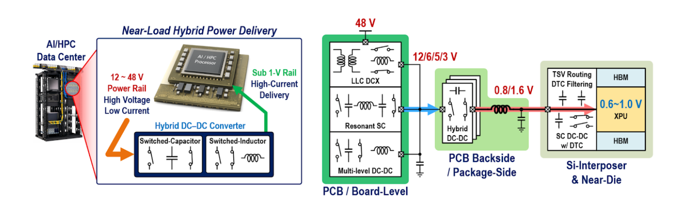
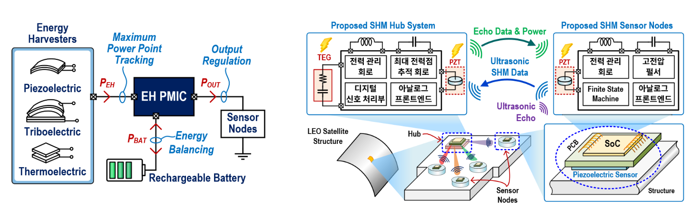

Integrated Power Management Circuits and Systems
We develop integrated power management circuits for mobile devices, AI computing platforms, and energy-autonomous sensor systems , with a focus on high-efficiency power conversion and compact system integration.
Battery-Powered PMICs for Mobile and Edge-AI Devices
We develop highly efficient power management circuits for Li-ion battery-powered mobile and Edge-AI devices. Our research focuses on compact power conversion with high efficiency and fast response over wide operating conditions.
- High-efficiency integrated DC–DC converters
- Fully integrated switched-capacitor DC–DC converters
- Fast load-transient response, high power conversion efficiency, wide input/output voltage range, etc.

High-Voltage PMICs for AI and HPC Systems
We investigate high-voltage and high-current power management circuits for AI accelerators and high-performance computing systems. Advanced converter architectures are explored to achieve high efficiency, fast transient response, and high power density.
- Hybrid DC–DC converters for high input voltage (12 V ~ 60 V)
- High-step-down architectures for sub 1-V supply
- High-current power delivery
- 2.5D and 3D point-of-load converter for chiplet architectures

Energy-Harvesting Systems and Ultra-Low-Power Sensor Nodes
We develop energy harvesting interfaces and ultra-low-power power management circuits for autonomous sensor and IoT systems. Our research enables reliable sensing and operation under limited or intermittently available energy.
- Multi-source energy harvesting (thermoelectric, photovoltaic, triboelectric, and piezoelectric transducers)
- Efficient and accurate maximum power point tracking algorithm
- Energy combiners for semi-permanent operation
- Ultra-low-power sensor nodes for low-earth-orbit satellites

Fully Integrated Voltage Regulators for Processors
We develop fully integrated voltage regulators for compact and efficient on-chip power delivery. Our research focuses on eliminating bulky external capacitors while achieving fast load-transient response, stable regulation over wide operating conditions, and low-voltage operation with high current efficiency.
- Fully integrated capless low dropout regulators (LDOs)
- Hybrid architectures for fast load-transient response
- Stability and power-supply rejection